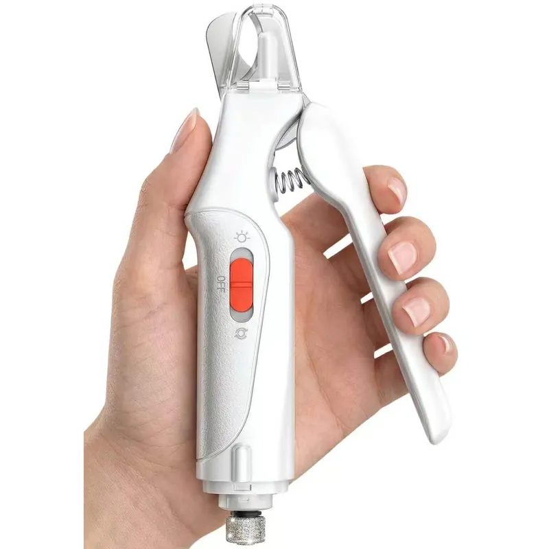
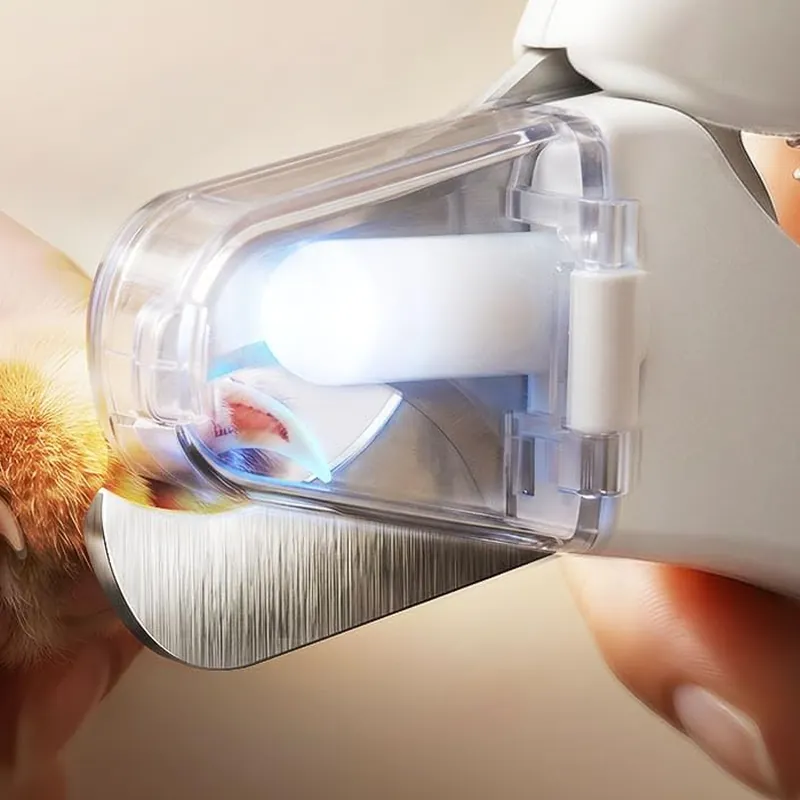
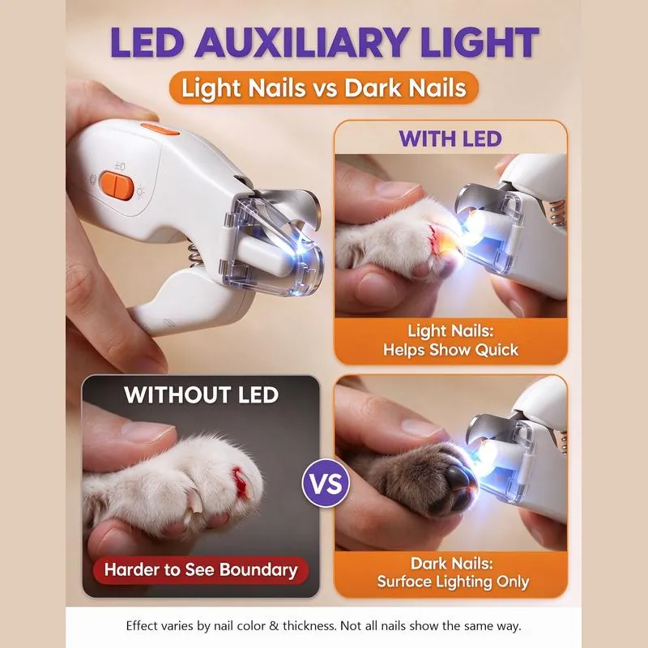
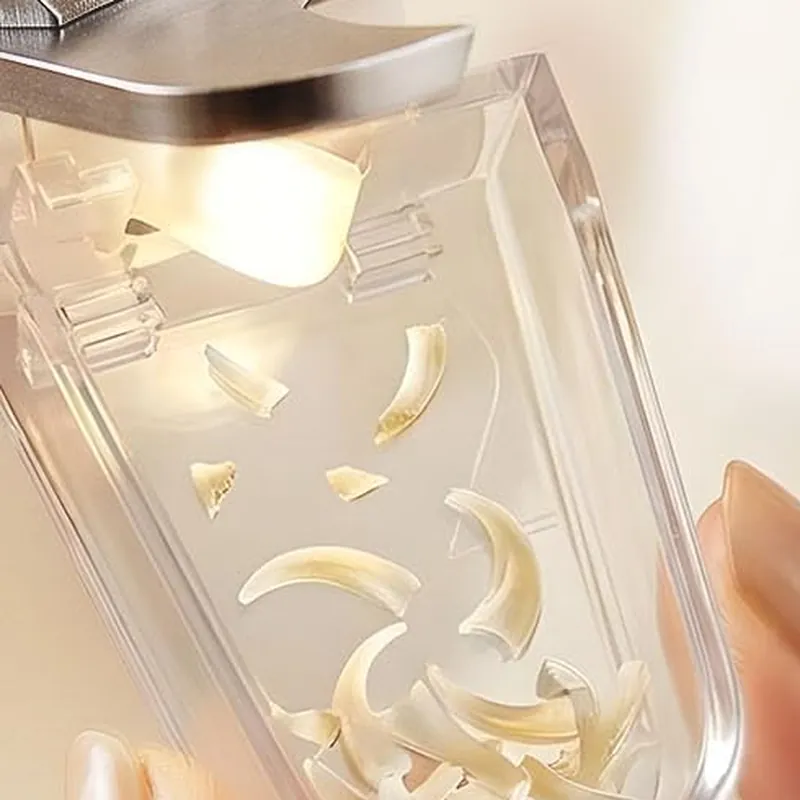
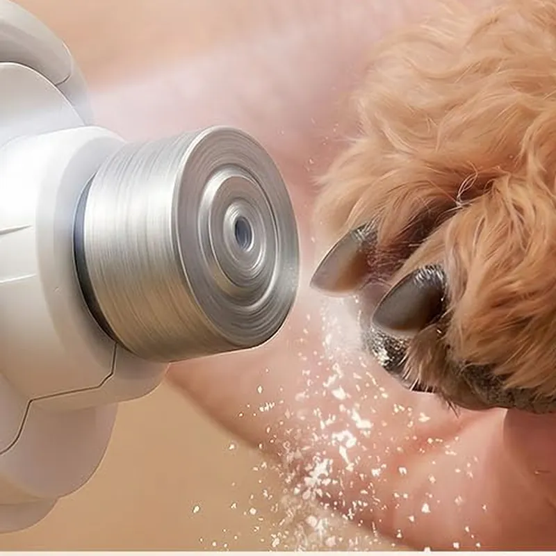
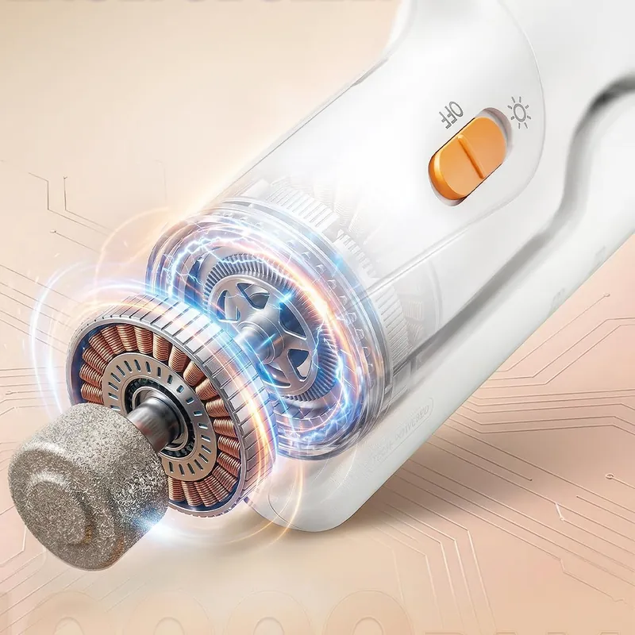
2-in-1 LED Nail Clipper
4.7 · 6,928 ratingsTwo LEDs light up the nail and the catcher keeps clippings off the floor. Clip, then smooth with the built-in grinder.
Only 3 left in stock
30% off ends in 3:00:00
- Two LEDs light up the nail and the catcher keeps clippings off the floor. Clip, then smooth with the built-in grinder.
- Order today, arrives in 13 to 25 days
- Free shipping on 2+
- Order by for Christmas
- 30-day money-back guarantee
Secure checkout
Easy to operate, indicator easy to read and direction easy to follow
This is PERFECT! It makes the process of trimming my cat’s nails a dream. The fact that it’s rechargeable, has a trimmer and a filer, with LED lights, makes it the perfect all-in-one cat trimmer I’ve ever used.
very good product saves me a ton of money
Trim your pet's nails at home with more confidence and less mess.
It lights up the nail with two LEDs, catches the clippings in a clear cap and smooths every edge with the quiet grinder built into the other end.
One tool in one hand, made for adult cats and small to medium dogs.
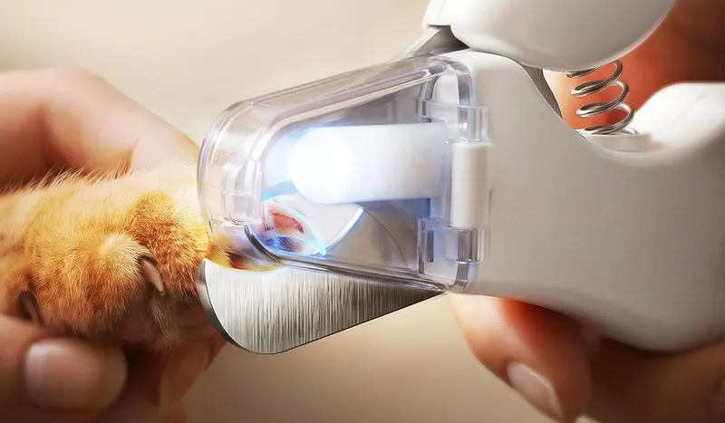
How it works
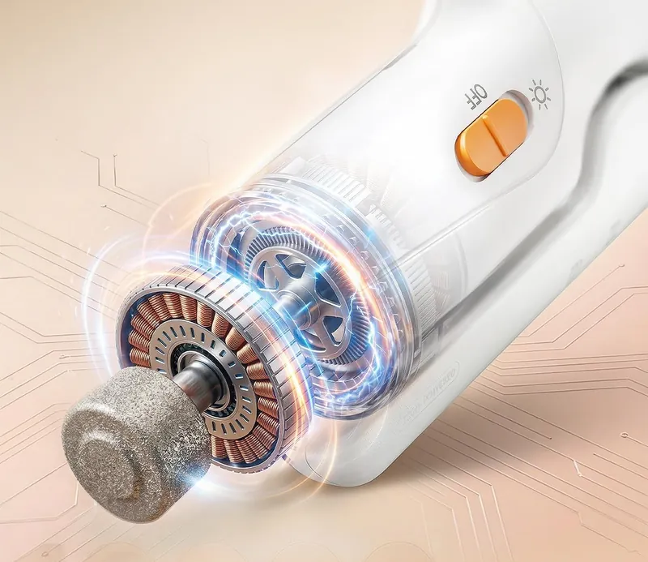
- Switch on the lightSlide the switch and the two LEDs light up the nail. On light-colored nails you can see the pink quick.
- Clip a little at a timeRest the nail between the blades and take small cuts in front of the quick. The clear catcher collects the pieces.
- Smooth the edgeTurn the tool around and give each nail a few short passes with the built-in grinder.
2-in-1 vs. a plain clipper
On light nails the LEDs show the pink quick, so you know where to stop. On dark nails the light shows the surface only, so take tiny cuts and finish with the grinder.
| 2-in-1 | Plain clipper | |
|---|---|---|
| Seeing the nail | Two LEDs light it up | Room light only |
| Clippings | Caught in the clear cap | On the floor and sofa |
| Sharp tips | Smoothed with the built-in grinder | A second tool or none |
| Charging | USB-C, rechargeable | Nothing to charge, nothing to smooth |
For cats and dogs
The clear catcher fills up instead of your rug or sofa. Empty it after each session.
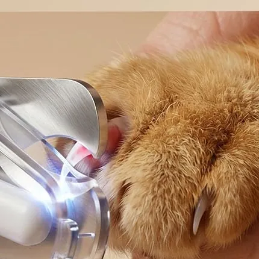
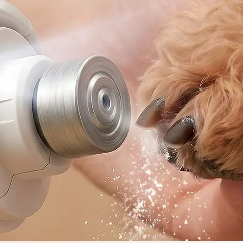
Smooth edges, fewer scratches. A few short passes with the grinder round off sharp tips, so legs, laps and furniture take fewer scratches.
One for every pet in the house
One costs $49.90, two cost $89.90 ($44.95 each) and three cost $129.90 ($43.30 each), enough for each pet or a gift for a fellow pet parent.
Order by for Christmas delivery.
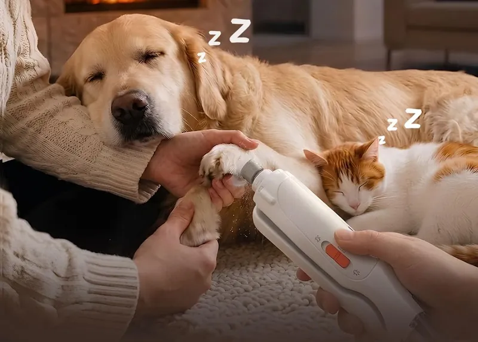
Choose your packWhat's in the box
In the box: one 2-in-1 nail clipper and grinder.
Charging: the battery charges over USB-C, so there are no batteries to buy. Charge it fully before the first trim.
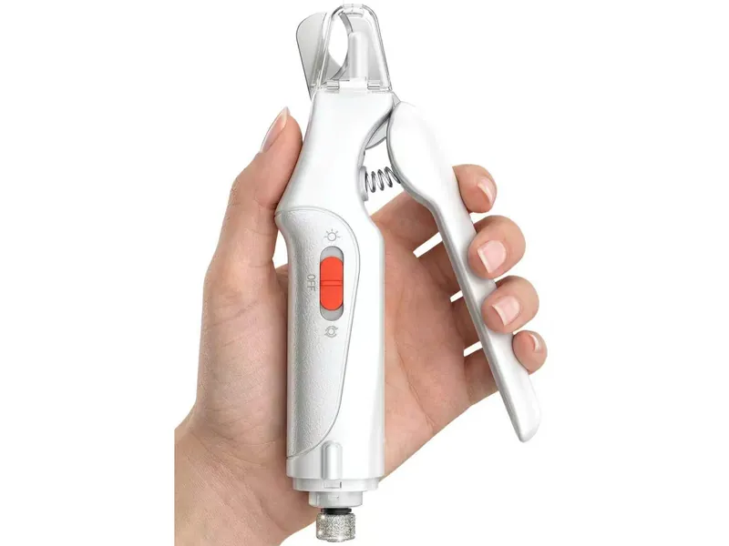
30-day money-back guarantee
If the clipper is not right for you or your pet, send it back within 30 days of delivery and we refund the full price. Arrived damaged or not working? Send us a photo within the same 30 days and we send a replacement or refund you, your choice.
Details
Specifications
- Type: 2-in-1 nail clipper with built-in grinder
- Suitable for: adult cats and small to medium dogs
- Light: 2 LED lights
- Blade: stainless steel, serrated edge
- Nail catcher: clear cap over the blade, empty after use
- Grinder: rotary grinding head, about 9000 RPM
- Noise: about 55 dB
- Power: rechargeable battery, USB-C charging
- Color: white with orange switch
- In the box: one 2-in-1 nail clipper and grinder
Using it safely
Clip a little at a time and stay in front of the quick. On dark nails the light shows the surface only, so take tiny cuts and finish with the grinder. Each nail should rest comfortably between the blades before you clip. The grinder hums at about 55 dB, and both steps happen with one tool, so nail day takes less time.
Shipping
Free shipping on 2+. Order today, arrives in 13 to 25 days. We pack your order within 2 to 5 business days, then it arrives within 7 to 12 business days. Shipping details
Returns and guarantee
30-day money-back guarantee. If the clipper is not right for you or your pet, send it back within 30 days of delivery and we refund the full price. Arrived damaged or not working? Send us a photo within the same 30 days and we send a replacement or refund you, your choice. Refund details
Good to know
Made for adult cats and small to medium dogs. Empty the catcher after each session and wipe the blade clean. Photos on this page show the clipper in use; how clearly the light shows the quick depends on your pet's nail color and thickness.
Questions
Will it arrive before Christmas?
Order today, arrives in 13 to 25 days. We pack your order within 2 to 5 business days, then it arrives within 7 to 12 business days. Order by for Christmas delivery. Every order ships with tracking.
Can I see the quick on dark nails?
On light-colored nails the two LEDs show the pink quick. On dark nails the light shows the surface only, so clip tiny pieces at a time and finish with the grinder.
Is it right for my pet?
It is made for adult cats and small to medium dogs. Each nail should rest comfortably between the blades before you clip. For very large dogs with thick nails, a larger clipper is the better choice.
How loud is the grinder?
About 55 dB, softer than a normal conversation. Let your pet hear and sniff it for a moment before the first trim.
How do the 2-pack and 3-pack work?
Choose 2 or 3 above and the discount is applied automatically in your cart, no code needed: 2 clippers cost $89.90 ($44.95 each), 3 cost $129.90 ($43.30 each).
What buyers say
4.7 out of 5 · 6,928 ratings
I'm really happy with this nail grinder! One of my dogs gets extremely nervous whenever it's time to trim his nails. He's terrified of the process, and even the slightest noise can make him anxious.
What I love most about this grinder is how quiet it is! I was honestly surprised by how smoothly everything went. He stayed calm, and I was able to work on his nails without the usual struggle or stress.
The LED light is another great feature because it helps me see the quick better, making the whole process feel safer and easier.
Overall, this has made nail trimming a much better experience for both of us. I'm really happy with it and would definitely recommend it, especially if you have a nervous dog like mine!
I bought these nail clippers for my small dog, and they work really well. The built-in LED light is surprisingly useful because it makes it much easier to see the nail and avoid cutting too far. The blades are sharp and cut cleanly without crushing the nails.
The handle feels comfortable to hold, and the spring makes clipping smooth and easy. I also like the small compartment that catches the nail clippings, which helps keep the area clean.
Overall, this is a great grooming tool for both dogs and cats. It feels sturdy, easy to use, and gives me more confidence when trimming my pet’s nails. I would definitely recommend it!
I use this nail clipper and grinder for both my Chihuahua and Shih Tzu and it works really well. I love having the clipper and grinder together so I don’t have to use two different tools. The clippers are sharp and cut their nails easily without having to squeeze too hard. The light is also really helpful, especially when I’m trying to be careful not to cut too far. The grinder isn’t super loud, which is a huge plus because my dogs normally freak out with noise 😂. I usually clip their nails first and then use the grinder to smooth out the sharp edges. Definitely makes doing their nails a lot easier! 🐶
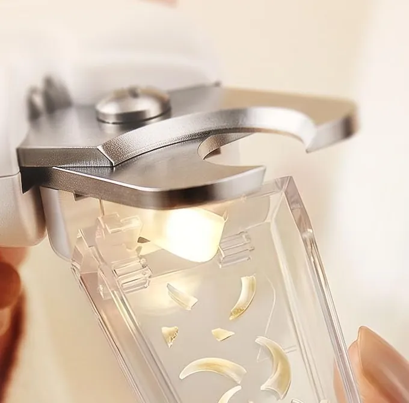